Sandbox-2D
Daniel Vishnevsky
About
Sandbox survival game where you can build, destroy and explore. It provides procedurally generated worlds with different biomes and unique experiences. Made with C++ and Raylib.
Features
This sandbox game features procedurally generated worlds with different biomes, survival and creative modes and physics. Why not try it out yourself? It's free!
Development
I started working on this for the sole goal of improving my skills and learning how to structure and design a big game. While I failed at structuring it, I think that I still gained a lot of knowledge from this project.
The development was rocky with a lot of project switching and a few burn outs until the final burn out took me out of this project. However, looking back at it now from the gameplay screenshots it looks like a real game. There might not be entities and other features I wanted to incorporate but still it looks damn good.
I might come back to this project in the future as it holds a special place in my heart.
Play
The game is available for free on Windows, Linux and MacOS.
Gallery
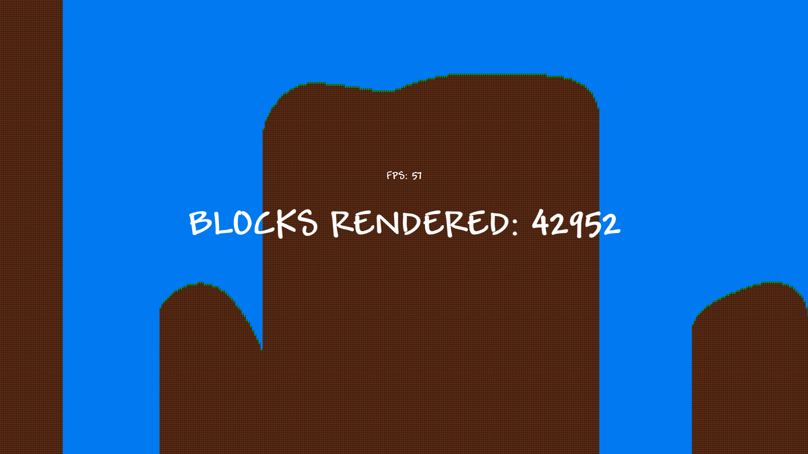
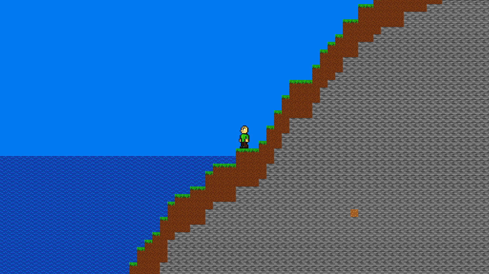
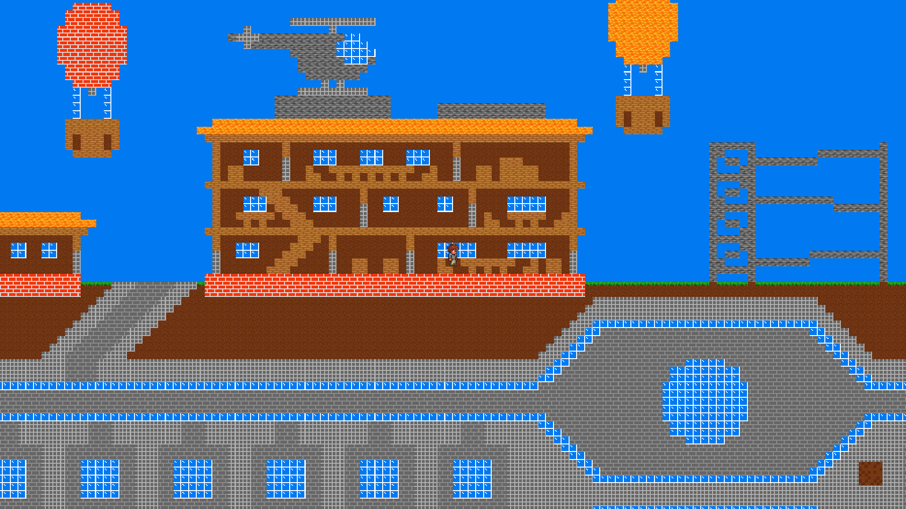
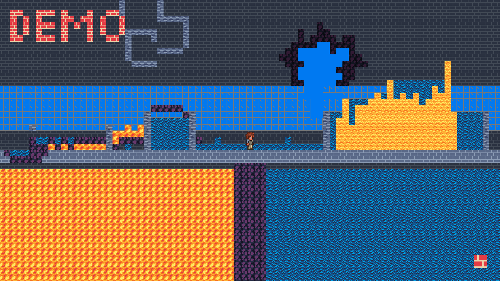
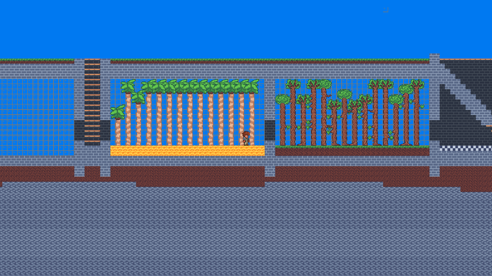
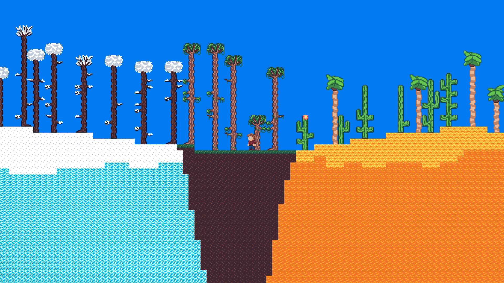
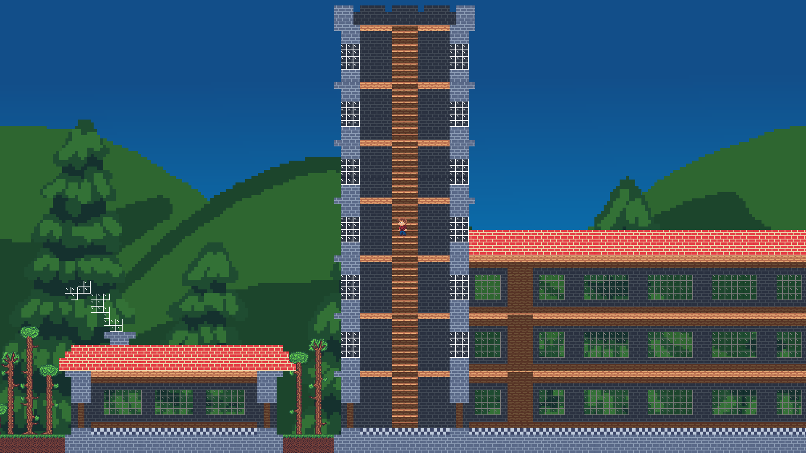
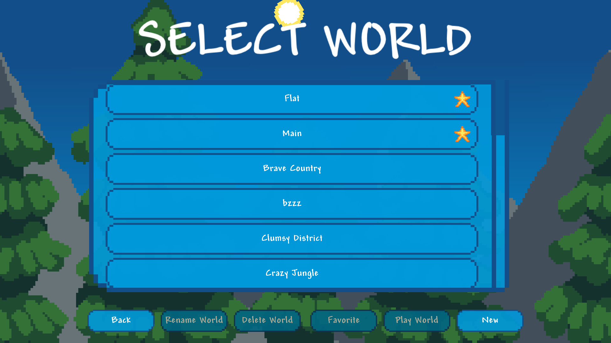
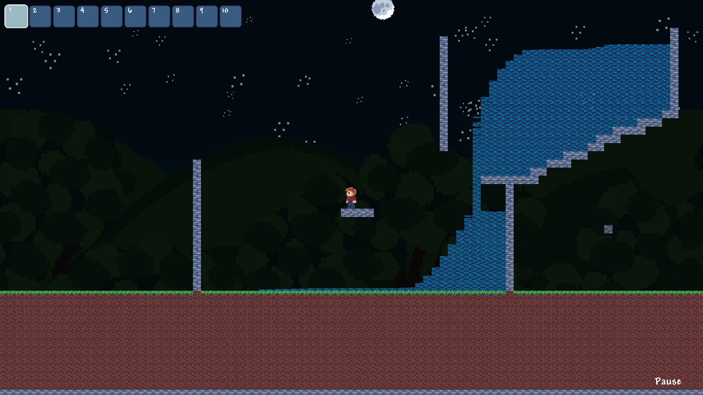
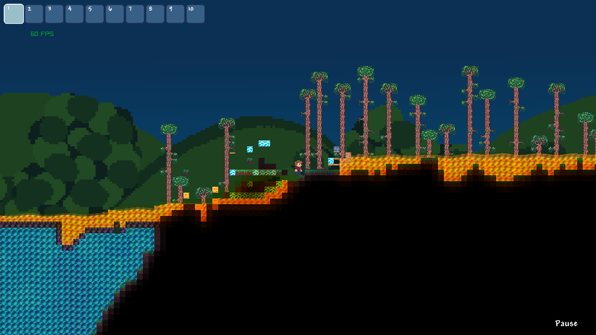
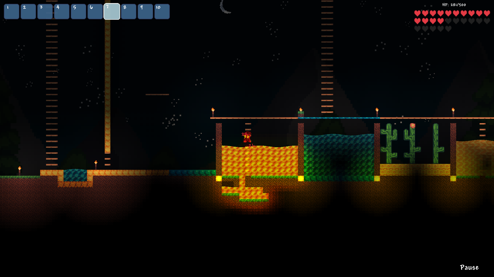
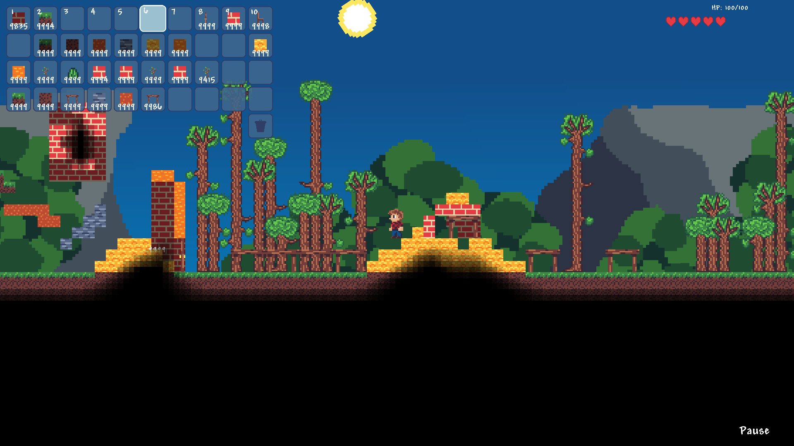
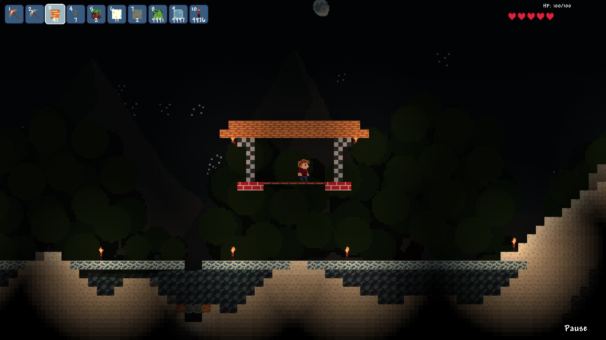
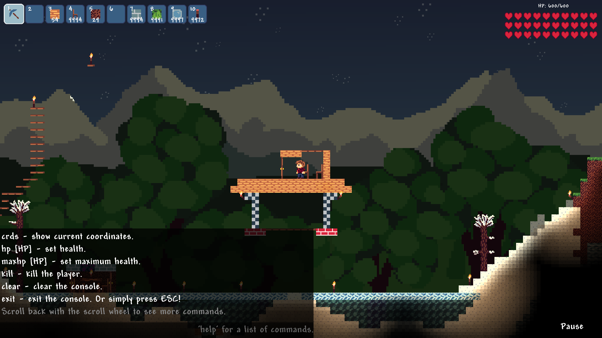
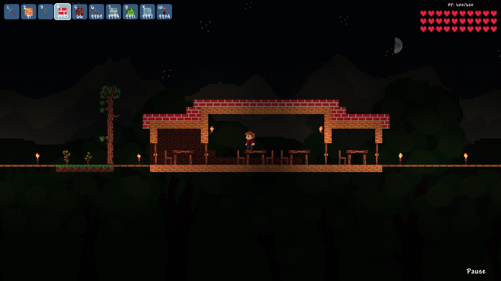